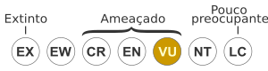

Betta splendens
Betta splendens (nome científico) é uma espécie de peixe da família Osphronemidae e do gênero
taxonômico Betta, originária do Sudeste Asiático (Indochina)
A espécie é conhecida popularmente como betta (no Brasil), peixe-beta (em Angola) ou
combatente (em Portugal) e peixe-de-briga-siamês, devido à sua agressividade contra
outros peixes.
Esta agressividade verifica-se predominantemente entre machos da espécie, de modo que, um macho colocado junto a peixes de espécies dóceis compatíveis em um aquário grande e decorado tem a possibilidade de conviver em harmonia. Por outro lado, se colocados em aquários pequenos, mesmo as fêmeas podem se tornar agressivas. Bettas fêmeas só podem ser criadas juntas em aquários de grandes e com um número ímpar de peixes, com duas fêmeas juntas uma pode tornar dominante sobre a outra
Características
Na sua forma selvagem os Betta splendens apresentam uma coloração discreta (cor acastanhada) que se confunde com o meio ambiente e com alguns tons de vermelho e azul nas barbatanas, são menores e menos agressivos que as formas domésticas. Na natureza podem ser encontrados nas bermas dos campos de arrozais, regatos, e pequenos lagos. O sistema social desta espécie é um sistema territorial em que durante a época de reprodução (época das chuvas) os machos defendem um território formado em redor de um "ninho-bolha", que eles próprios constroem e mantém. As fêmeas visitam os machos que as cortejam até estas libertarem os ovos. Em seguida e após a fertilização, os machos colocam os ovos no ninho e expulsam as fêmeas do território.
Este betta tem a particularidade de respirar o ar atmosférico, graças a órgãos chamados de labirintos, que fazem com que o ar passe bem próximo da corrente sanguínea dele, proporcionando a troca de oxigênio com o sangue por meio de difusão. Por este motivo, os Bettas podem viver em águas pobres em oxigênio, mas não poluídas.
Os Bettas são muito populares entre os entusiastas de aquariofilia. As formas domésticas que atualmente se podem comprar nas lojas são o resultado de dois tipos de seleção artificial. Por um lado procurou-se produzir peixes com características mais ornamentais, com barbatanas alongadas e corpo colorido, por outro procurou-se criar peixes mais agressivos, para serem utilizados em torneios de luta (mais comum no Sudeste Asiático). Estes últimos normalmente apresentam barbatanas curtas e são de maior tamanho. Devido a estas características são encontrados na maiorias lojas de aquarismo
Reprodução
A reprodução em cativeiro é relativamente simples, bastando para isso um aquário (tamanho mínimo: 30 litros) e um pequeno recipiente transparente. No aquário, coloca-se um macho, enquanto coloca-se a fêmea no pequeno recipiente. Em seguida, o recipiente (com a boca para cima) é colocado dentro do aquário, que terá um nível de água insuficiente para cobrir o recipiente.
Uma vez visualizando a fêmea, o macho irá iniciar a construção do ninho, formado por diversas bolhas na superfície. Essa tarefa pode ser facilitada por algo que fique na superfície da água, como um isopor ou pedaço de plástico, o que evita que o ninho se prenda ao recipiente da fêmea. Uma vez construído o ninho, é o momento de soltar a fêmea, que será cortejada e envolvida pelo macho - se eles tiverem um contato imediato, o macho irá cortejá-la antes de fazer o ninho, só depois de um tempo a cortejando, ele começará a fazer o ninho.
Sob pressão, a fêmea se entregará ao macho, então o macho a abraçará - esse abraço é conhecido como abraço nupcial. Ela expelirá os ovos, que serão fertilizados e colocados no ninho pelo macho, com a boca. Algumas fêmeas ajudam o macho, outras preferem comer os próprios ovos. Uma vez concluído esta etapa, a fêmea deve ser retirada para não ser morta pelo macho. Este será responsável por cuidar dos ninhos e dos alevinos após o nascimento, devolvendo ao ninho os que caem.Após 3 ou 4 dias, quando os alevinos já estão nadando de forma horizontal, após terem absorvido o saco vitelino, contando como início o dia em que os ovos eclodiram, o macho tem que ser separado dos alevinos, pois nessa hora ele poderá come-los.
Dieta
O B. splendens se alimenta de zooplânctons, crustáceos, larvas de mosquito e de outros insetos ligados à água. Em cativeiro são geralmente alimentados com rações paletizadas ou alimentos congelados. São basicamente insetívoros e não consomem nenhum tipo de vegetação.[10]
Anatomía
Tanto a anatomia do sexo, como a suas cores, são altamente variadas e diversas. Os bettas possuem 4 nadadeiras, a nadadeira Dorsal (que fica em cima do dorso do animal), a nadadeira Anal (localizada na parte de baixo do dorso do animal), a nadadeira Ventral ou Pélvica (localizada muito próxima a cabeça do animal) e finalmente a nadadeira Caudal.[11] Os machos são caracterizados por possuírem todas as nadadeiras maiores que as das fêmeas. Alcançam em torno de 6,5 cm de comprimento.


Os criadores trabalham continuamente no desenvolvimento de novas variedades de cores e caudas, inclusive mesmo através de híbridos.
Habitat natural do Betta Splendens
O habitat natural dos Bettas é caracterizado por águas rasas e de baixa movimentação. Os Bettas vivem normalmente em rios com pouca correnteza, lagos pântanos e, até mesmo, em arroizais e valas pequenas em beiras de estrada. Como conseguem respirar na superfície, conseguem se adaptar facilmente a águas de baixa oxigenação.
Cores
Os Betta splendens possuem uma incrível variedade de cores, devido aos esforços de criadores aficionados pela espécie e sua beleza. As cores mais comuns são azul, vermelho, amarelo, opaco, preto, branco e laranja. Enquanto que as cores consideradas mais raras são: metálico, turquesa, cobre, lavanda, gás mostarda, grizzle, mármore, verde, e koi. Além das cores em si, possuem também diversos padrões de cores, alguns podem ser citados:
- Sólidos: São indivíduos de uma cor só, cores bem acentuadas e definidas, que não demonstram nenhuma outra coloração no mesmo espécimen.
- Bicolores: São indivíduos que no seu padrão base contêm duas cores bases, mas sem nenhum outro tipo de mancha, seja no tronco ou qualquer uma das barbatanas.
- Butterfly: São indivíduos que no seu padrão base contêm duas ou mais cores, e porque estes já não são chamados de bicolores, pela existência de duas ou mais cores nas diferentes partes do betta, desde que estejam bem ordenadas.
- Dragon: Possuem uma cor base forte com as escamas nas parte principal do corpo no iridescente pálido.
- Cambodian: O corpo é pálido, quase incolor.
- Mármore: Padrões irregulares em todo o corpo e barbatanas.
Ver Também
- Lista de peixes que respiram fora de água
- Peixes
- Peixes ósseos
- Peixes Históricos
- Peixes ornamentais
- Pesca
Referências
- «IUCN red list Betta splendens». Lista vermelha da IUCN. Consultado em 21 de abril de 2022
- «Peixe Betta – Cuidados, Fatos e Características da Espécie». Peixes e Aquarismo. Consultado em 13 de julho de 2021
- Aquaterrario (6 de janeiro de 2020). «Saiba tudo sobre o peixe betta». Aquaterrário. Consultado em 20 de dezembro de 2020
- «Betta - peixe de briga - siamês de briga». www.aquarioornamental.com.br. Consultado em 20 de dezembro de 2020
- «Peixes siameses de briga». www.ninha.bio.br. Consultado em 20 de dezembro de 2020
- «Betta splendens (Siamese Fighting Fish)». Animal Diversity Web (em inglês). Consultado em 27 de junho de 2018
- «Betta (Betta splendens) - Aquarismo Paulista». Aquarismo Paulista. 25 de julho de 2014
- «Post». Criar peixes. Consultado em 31 de outubro de 2019 «Betta splendens (Beta) - Aquarismo Online [AqOL]».
- «Betta splendens (Beta) - Aquarismo Online [AqOL]». www.aquaonline.com.br. Consultado em 10 de setembro de 2019
- «What can you feed Betta fish (rated from Best to Not-so-Good)». Betta Talk (em inglês). Consultado em 6 de julho de 2021
- «Peixes Betta - variedades de acordo com o tipo, a abertura e o tamanho de cauda». CPT
- «Betta Splendens: tudo sobre este peixe de aquário». Consultado em 7 de dezembro de 2022
| Estado de conservação | |
|---|---|
|  | |
| Classificação científica | |
|---|---|
| Reino: | Animalia |
| Filo: | Chordata |
| Classe: | Actinopterygii |
| Subclasse: | Osteichthyes |
| Ordem: | Perciformes |
| Família: | Osphronemidae |
| Género: | Betta |
| Espécie: | B. splendens |
| Nome binomial | |
|---|---|
| Espécie: | B. splendens |
| (Regan, 1910) | |